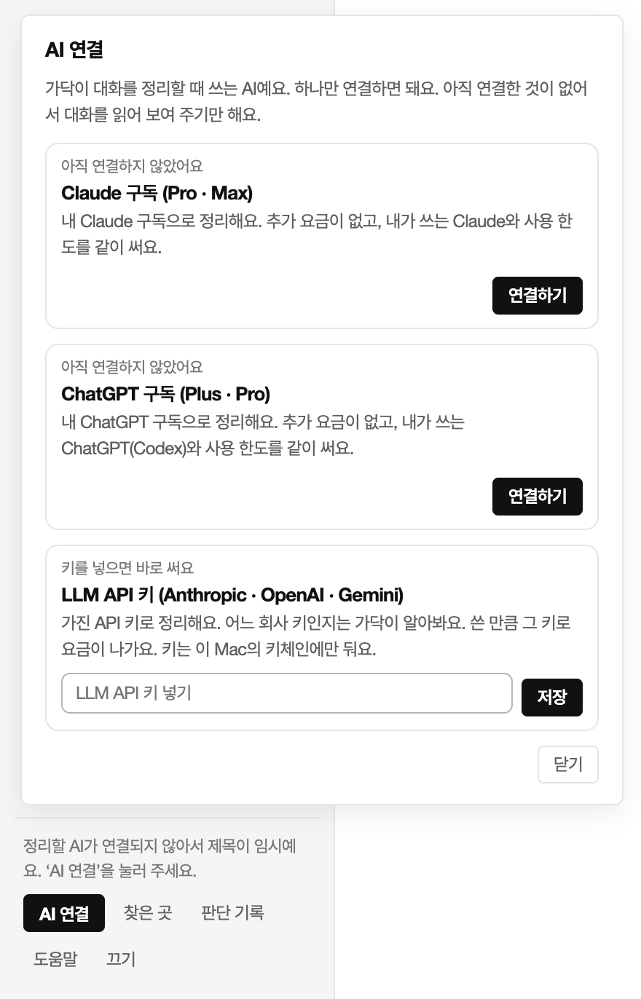
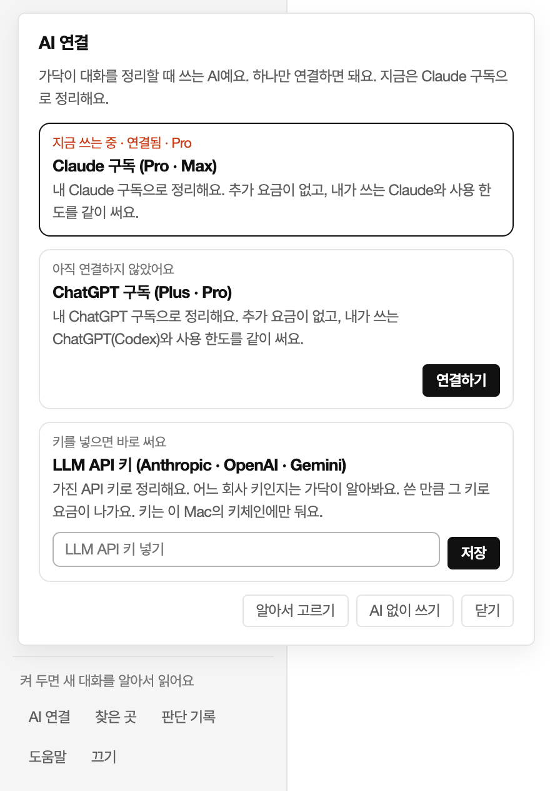
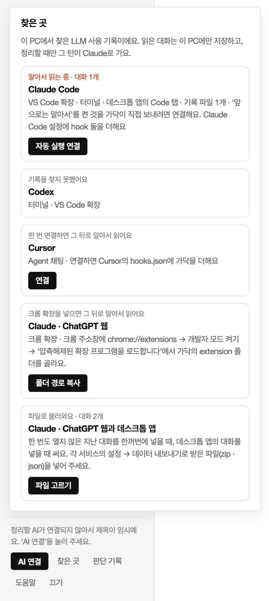
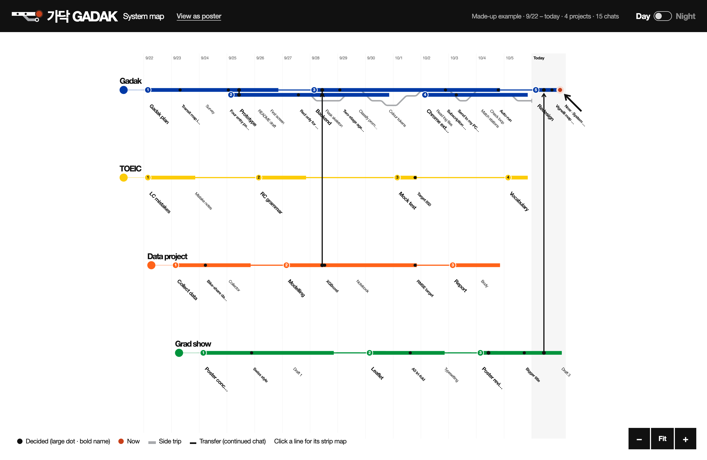
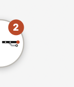
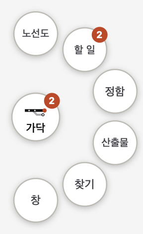
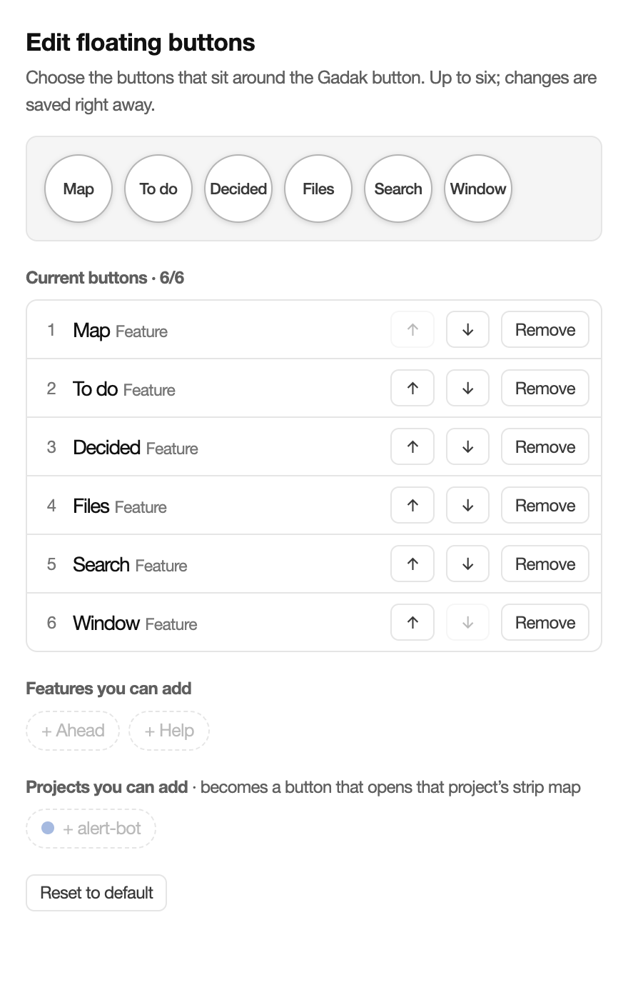
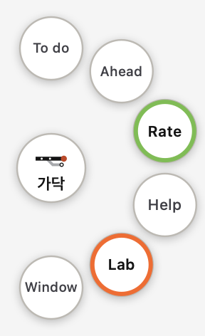

From install to first launch on a Mac or Windows. No terminal needed.
Gadak turns long conversations with AIs such as Claude and ChatGPT into a transit map and tells you first about what slipped past. You keep chatting where you always do; Gadak only organises the flow alongside.
InstallOne file · 1 min
First launchAllow once · 1 min
Connect AIOne button · 2 min
Use itLeave it on
The file for your computer
Your computer
File you got
See
Mac · Apple silicon (M1 or later · macOS 12 or later)
Gadak-0.1.0-arm64.dmg
p. 2
Mac · Intel (macOS 13 or later)
Gadak-0.1.0-x86_64.dmg
p. 2
Windows 10 · 11 (64-bit)
Gadak-0.1.0-windows-x64-setup.exe To use it without installing: Gadak-0.1.0-windows-x64.zip
p. 3
Which Mac? Apple menu → About This Mac: ‘Chip Apple M…’ is Apple silicon, ‘Processor … Intel …’ is Intel.
You need just one AI for sorting. A Claude subscription (Pro · Max), a ChatGPT subscription (Plus · Pro) or an LLM API key (Anthropic · OpenAI · Gemini). Gadak starts without one, but then it only reads and shows your chats, and station names are just the start of each question.
Contents
1Installing on a Mac · first launchp. 2
2Installing on Windows · first launchp. 3
3Connect AI — one buttonp. 4
4Reading chatsp. 5
5The Gadak windowp. 6
6Reading the map · system mapp. 7
7Floating button (Mac)p. 8
8Settings · when you’re stuck · removing itp. 9
Help in the Gadak window covers reading the screen and a glossary. · Gadak 0.1.0 · October 2026
1Installing on a MacMac
Double-click the dmg file you got. A window opens. Apple silicon Macs use the arm64 file; Intel Macs use x86_64.
Drag Gadak onto the Applications folder on the right.
Close the window. That’s the whole install.
Gadak
Gadak
→
Applications
Always move it to Applications before you open it. Opened straight from the dmg window, some features such as the Cursor connection don’t work. ‘How to open Gadak.txt’ and this guide in the window are for reading and don’t need moving.
First launch — the Mac blocks it once
Gadak was made as a class project and has no paid Apple developer signature. So you need to allow it yourself once.
Open Gadak from Applications (or Launchpad).
A window says it can’t be opened. Press Done. Don’t press ‘Move to Trash’.
Open System Settings → Privacy & Security and scroll down.
Next to ‘“Gadak” was blocked …’, press Open Anyway.
In the window that asks again, press Open Anyway and confirm with your Mac password or Touch ID.
“Gadak” Not Opened
Apple could not verify “Gadak” is free of malware that may harm your Mac or compromise your privacy.
Move to TrashDone
System Settings
Privacy & Security › Security
“Gadak” was blocked to protect your Mac.Open Anyway
A drawing, not a screenshot. Wording varies a little by macOS version.
After it opens once, it opens normally from then on. On macOS 14 or earlier you can also right-click Gadak → Open → Open. Once it’s running, the top of the window is a black bar; drag an empty part of the bar to move the window.
2Installing on WindowsWindows
Windows 10 or 11 is all you need. Everything Gadak needs is in one installer, so there’s nothing else to install.
Double-click ‘Gadak-0.1.0-windows-x64-setup.exe’.
If a blue “Windows protected your PC” window appears, press More info, then Run anyway. Gadak was made as a class project and has no paid signature, so this check is needed once.
Press Install in the installer. It installs for your account only, so it won’t ask for an administrator password.
With ‘Start Gadak’ ticked, press Finish. The Gadak window opens. From then on, start Gadak from the Start menu or the desktop.
2In the blue window, ‘More info’
Windows protected your PC
Microsoft Defender SmartScreen prevented an unrecognized app from starting. Running this app might put your PC at risk.
A drawing, not a screenshot. It looks a little different depending on your version of Windows.
How Windows is different
Gadak window
Opens on its own as an Edge (or, failing that, Chrome) window without an address bar. Closing the window turns Gadak off. To start it again, use Gadak in the Start menu.
Connect AI
Gadak can’t download Claude Code or Codex for you. If one is already installed and signed in on this PC, just pick it; if not, add an LLM API key (section 3). The key is kept only in Windows Credential Manager on this PC.
Not there yet
The floating button (section 7) · Cursor connection · Gadak sending by itself · the Claude usage gauge. Everything else is the same as on a Mac.
Use without installing
Unzip ‘Gadak-0.1.0-windows-x64.zip’ and run Start Gadak.cmd inside it.
Removing it
Settings → Apps → Installed apps → Gadak → Uninstall. To delete the chats it read as well, delete the C:\Users\your name\.gadak folder too.
The Windows version first came out in 0.1.0. It hasn’t been tried on many PCs yet. If it doesn’t start or behaves oddly, please send C:\Users\your name\.gadak\gadak.log to the makers.
3Connect AI — one button
Connect the AI Gadak uses to sort your chats. The Connect AI window opens by itself when Gadak starts. Set up just one of the three you have.

On first launch. If you closed it, open it again with the Connect AI button at the bottom left.
What you have
What to do
Claude subscription Pro · Max
Press Connect in the ‘Claude subscription’ row.
ChatGPT subscription Plus · Pro
Press Connect in the ‘ChatGPT subscription’ row.
LLM API key Anthropic · OpenAI · Gemini
Paste your key in the ‘LLM API key’ box and press Save. Gadak works out which company the key is from.
When you press ‘Connect’ Mac
Gadak downloads the program it needs. ‘Claude Code’ for Claude, ‘Codex’ for ChatGPT. These are each company’s official releases, about 200 MB, so it takes about a minute. Skipped if already there.
Your browser opens. Sign in with your usual account and press Allow. Meanwhile Gadak shows ‘Finish signing in in your browser’.
Back in the Gadak window it says ‘Connected’. Gadak now sorts with that AI.
Windows Gadak can’t download the program for you. Install Claude Code or Codex yourself and sign in, and Gadak finds it; otherwise connect with an LLM API key.

Once connected. The AI in use has a darker border.
Good to know
· With a subscription there is no extra charge, but Gadak shares the usage limit with your own Claude or ChatGPT use. How much is used shows at the bottom right of the Gadak window (section 5).
· An API key is billed for what it uses. The key is kept only in this Mac’s Keychain (Credential Manager on Windows), and only its last four characters are shown.
· A free Gemini key from Google AI Studio works too. It costs nothing, but the limit is low and what you send may be used by Google to improve its products.
· Gadak never sees your password. You sign in to the company directly in your browser.
· If you connected several, switch with Sort with this in the same window.
· To go without, choose Use without AI. Gadak then only reads and shows your chats.
· If sign-in doesn’t finish within 5 minutes it stops by itself. Just press Connect again.
4Reading chats
Gadak finds and reads the AI chats on this computer. What you need to do depends on where you chat. What it’s reading now is shown under Sources at the bottom left.
Where you use AI
What to do
Claude Code · Codex
Nothing. Turn Gadak on and it reads them by itself, following the chat in progress too.
Cursor Mac
Press Sources → Connect once. It reads from the next chat on.
Claude · ChatGPT on the web (Chrome)
Add the Gadak extension to Chrome once, following the steps below.
Past chats in bulk
Add the file you got from Settings → Export data in each service with Sources → Choose file. With an AI connected, Gadak groups them by project.
Adding the Chrome extension (once · 2 min)
Under Sources at the bottom left of the Gadak window, press Copy folder path.
Type chrome://extensions in Chrome’s address bar and turn on Developer mode at the top right.
Press Load unpacked. In the folder picker press ⌘ ⇧ G, paste and open. WindowsPaste it into the address box of the folder picker.
Reload any Claude or ChatGPT tabs that were already open.
The extension sends the chats you open in Chrome only to Gadak on this computer. It doesn’t read incognito windows or temporary chats. It isn’t on the Chrome Web Store, which is why Developer mode is needed.
Connect auto-runMac The button in the Claude Code row under ‘Sources’. It adds Gadak to the Claude Code settings so Gadak can send the two kinds you turned on (undoing unrequested changes · carry-on summary) itself. Reading works the same without it.

Sources. What it’s reading shows as ‘Reading by itself’ or ‘Connected’.
5The Gadak window
123456789
A made-up example chat. Gadak doesn’t answer, so there is no message box.
1Chat list. Grouped by project. Search in the box above; hover over a chat you don’t need and press × to remove it. Press ‹ to fold the list.
2Strip map. One chat is one line. Each dot is one question (a station); click it to go there. Fold and unfold with Esc.
3Chat text. Read only. You keep chatting where you always do.
4Lists. To do · Decided · Files · Ahead. Press a to-do’s button to copy text to send to the AI. Remove a to-do you don’t need with ×.
5Note. The card that pops up when a new to-do appears. Do it now or put it off with ‘Later’.
6Status and buttons. One line on what Gadak is doing now. Below it: Connect AI · Sources · Decision trace · Help · Quit.
7System map. Draws every project and chat on one sheet (section 6).
8Day · Night. Switches between a light and a dark screen. The Mac app also has a Gadak button switch to its left that shows or hides the floating button.
9Usage limit. With a subscription, shows how much of the 5-hour and weekly limits is used. Only shown when it can be read.
The four lists
To do
Missed work Gadak found (missed request · unrequested change · unfinished side trip) and suggestions (carry on · repeated question · topic change · next step).
Decided
Everything decided so far, newest first. Click one to go to where it was decided.
Files
Files that came out of the chat. A file changed several times is grouped into versions (v1 · v2).
Ahead
Press Look ahead and Gadak finds up to three ways this chat could go. It takes 30 seconds to 2 minutes and uses a little of your AI usage limit.
6Reading the map · system map
One chat is one line. The left is the start, the right is now. Station names are Gadak’s short version of each question.
Main line
A thick line in the project’s colour. The same colour on the system map.
Station
A small black dot. One question and its answer. Click it to go there.
Decided
A large black dot with a bold station name. Something was decided there.
Now
A red dot with a glow. Where the chat is now.
Side trip
A grey line dropping below. A question that wandered off for a while.
To do
A red ring below a station is still to do; a grey ring is done. Hover to see it.
File
A small dot with a file name. A file was made or changed there.
Section
The label above the line: a stage of the conversation. Past sections fold into ticks; click the label to unfold.
Transfer
The black arrow at the end of the line. Copies a summary of this chat to paste at the start of a new one.
Use This chat · Whole project on the strip map card to see one chat or the project’s chats joined up. The other marks and words are in Help in the Gadak window → ‘Reading the map’ · ‘Glossary’.
System map — every chat on one sheet

Opens with System map in the black bar at the top. A made-up example.
How to read it
Each row is a project; each thick segment is a chat. Dates run from left to right. A vertical black line marks where one chat carried on into another (a transfer).
Period
Choose the last 7 · 15 · 30 days. Zoom with − · Fit · + at the bottom right.
Strip map
Click a line to unfold that chat’s map as a single strip.
View as poster
Draws the same map like a transit poster. Close the system map with Esc.
7Floating button — watch while you use other appsMac
When Gadak is on, the Gadak button rests half over the edge of the screen. It stays visible while you use other apps, so you can see the map without going to the Gadak window. Not on Windows yet.

Usually

On hover
Gadak (centre)
Shows or hides the strip map window. Drag it to move it to another edge.
Map
Shows the strip map of the chat you’re in at the top of the screen.
To do · Decided · Files
Opens a separate list window on that tab.
Search · Window
Opens the Gadak window. Search goes straight to the chat search box.
Red number
How many to-dos are open in the current chat.
Close floating windows with Esc. While the button is showing, closing the Gadak window doesn’t turn Gadak off. To quit, press ⌘ Q.
Hide · show again. Right-click the Gadak button → Hide Button. Four ways to show it again: the Gadak button switch at the top right of the Gadak window, ⇧ ⌘ B, the menu View → Floating Button, or right-click the Gadak icon in the Dock → Show Floating Button.
Your own buttons — Edit Buttons
Right-click the Gadak button → Edit Buttons to open a small window. Changes save right away and reach the button within a few seconds.
Remove
Press Remove on a button you don’t use.
Add
Press a dotted one below, such as + Ahead or + Help. Up to six.
Reorder
Move with ↑↓.
Project buttons
Press + project name to make a button for that project. It opens that project’s strip map without opening the Gadak window. The name on the button can be up to four characters.
Reset to default
Back to the six (Map · To do · Decided · Files · Search · Window).

Project buttons have a border in the project’s line colour.

An example after changes
8Settings at a glance
What
Where
Default
AI for sorting
Connect AI at the bottom left
Gadak picks one of those connected
Where chats are read
Sources at the bottom left (Cursor connection · Chrome extension · import file)
Claude Code · Codex read automatically
Light · dark screen
The Day · Night switch on the right of the black bar at the top
Follows your computer’s appearance
System map period
Last 7 · 15 · 30 days at the top of the system map
30 days
Look ahead automatically
Below the To do tab on the right. Uses more of your AI usage limit when on
Off (only when you press Look ahead)
Gadak sending by itself Mac
Below the To do tab on the right. Two kinds: undoing unrequested changes · carry-on summary
Off
Floating button Mac
Drag to place it, right-click → Edit Buttons to arrange, hide with the Gadak button switch
Left edge · six buttons · shown
Removing a chat from the list
Hover over the chat and press ×. Restore it under ‘removed’ at the bottom of the list
—
Removing a to-do
The × to the right of the to-do. It also leaves the ring on the map and the count
—
When you’re stuck
It won’t open the first time
On a Mac, check you did ‘Open Anyway’ from section 1; Gadak must be in Applications. On Windows, ‘More info → Run anyway’ from section 2.
Station names are just the start of my questions
No AI is connected. Connect one under Connect AI at the bottom left.
‘Connect’ never finishes
Check that you finished signing in in your browser. It stops by itself after 5 minutes; just press it again.
It says in red that it stopped
You hit the AI usage limit or were signed out. Once the limit resets, press Resume sorting.
I don’t see any chats
Check Sources. If you have never used an AI on this computer, there is nothing to read.
I can’t see the floating button Mac
It’s hidden. Turn on the Gadak button switch at the top right of the Gadak window. If it still isn’t there, check all four edges of the screen.
Clicking Gadak doesn’t open a window Windows
The reason is written in C:\Users\your name\.gadak\gadak.log. If the installer stops saying “Gadak is running”, close the Gadak window and try again.
Where do my chats go? Chat text is stored only on this computer. Only while sorting does part of a chat go to the AI you connected (your own account). Chat text never goes to the Gadak team’s server.
Removing Gadak Mac: move Gadak from Applications to the Trash. To delete the chats it read as well, press ⌘ ⇧ G in Finder and delete the ~/.gadak folder too. Windows: uninstall Gadak under Settings → Apps → Installed apps, and delete the C:\Users\your name\.gadak folder too.